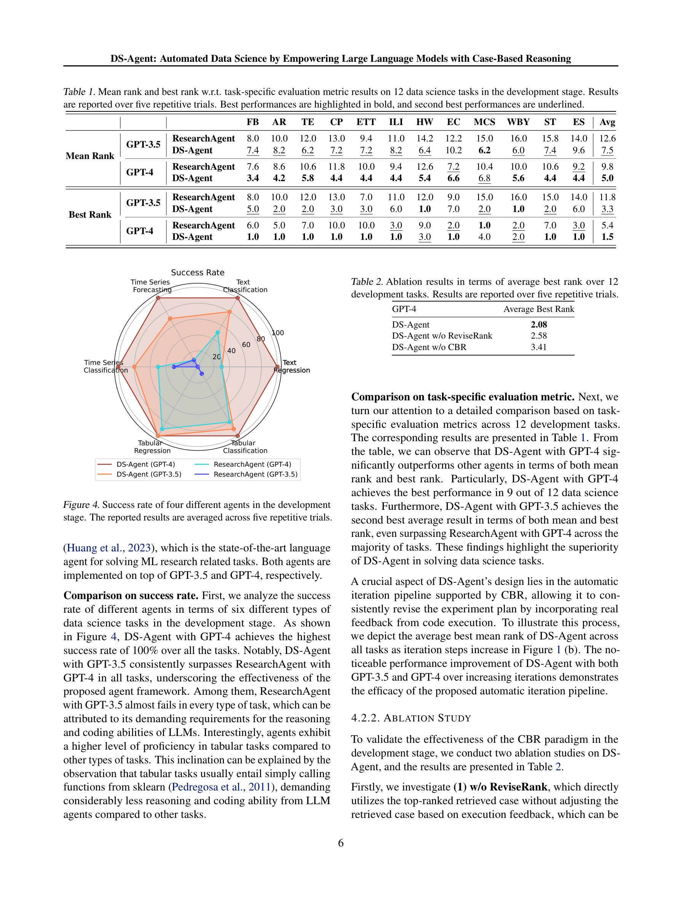

Essence

Figure 1. (a) Overview of DS-Agent with CBR based LLMs. (b)
DS-Agent는 LLM 에이전트와 case-based reasoning(CBR)을 결합하여 자동화된 데이터 사이언스 작업을 수행하는 프레임워크이다. 개발 단계에서 반복적 개선을 통해 최적의 ML 모델을 구축하고, 배포 단계에서 저자원 환경에 맞춰 과거 성공 사례를 재사용한다.
저자: Laith Alzubaidi, Jinglan Zhang, Amjad J. Humaidi, Ayad Q. Al-Dujaili, Ye Duan, Omran Al-Shamma, José Santamaría, Mohammed A. Fadhel, Muthana Al‐Amidie, Laith Farhan | 날짜: 2024 | URL: https://arxiv.org/abs/2402.17453
Figure 1. (a) Overview of DS-Agent with CBR based LLMs. (b)
DS-Agent는 LLM 에이전트와 case-based reasoning(CBR)을 결합하여 자동화된 데이터 사이언스 작업을 수행하는 프레임워크이다. 개발 단계에서 반복적 개선을 통해 최적의 ML 모델을 구축하고, 배포 단계에서 저자원 환경에 맞춰 과거 성공 사례를 재사용한다.

Figure 4. Success rate of four different agents in the development

Figure 2. Comparison between (a) RAG based LLMs and (b) CBR
총평: DS-Agent는 CBR과 LLM을 창의적으로 결합하여 데이터 사이언스 자동화에서 실질적인 성능 개선과 비용 효율성을 동시에 달성했다. Kaggle 지식 활용과 이원화된 파이프라인 설계는 실용적이며, 명확한 실험 결과와 오픈소스 공개로 후속 연구를 촉진할 수 있는 우수한 기여다.